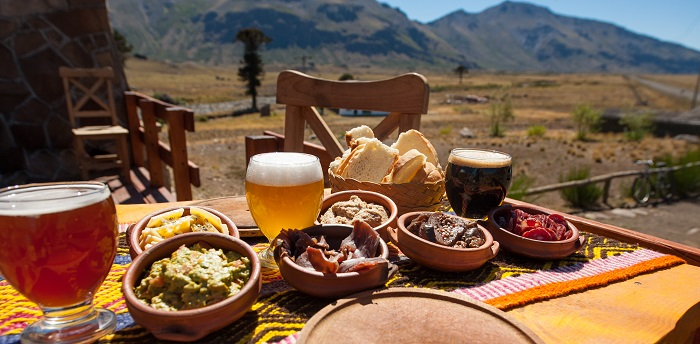

CAVIAHUE, NEUQUEN
Caviahue es una localidad argentina ubicada en el Departamento Ñorquín de la Provincia del Neuquén; es sede de la comuna de Caviahue-Copahue. Se encuentra sobre la Ruta Provincial 26, a orillas del lago Caviahue.

COMO LLEGAR
La ruta hasta Caviahue esta totalmente asfaltada y en buen estado, aunque es posible encontrar ya llegando a Caviahue algún tramo con nieve o hielo donde hay que tener precaución. Se encuentra a 119km de la Ciudad de Las Lajas por Ruta Provincial 21 y Ruta Provincial 26.
Actividades
SALTO DEL AGRIO
Es una imponente cascada de unos 45 mts de altura enmarcada en un amplio cañón formado por sucesivas coladas de lava, producto de la antigua actividad volcánica

Temporadas
En la localidad de caviahue nos manejamos mediante temporadas, en Invierno: Temporada Alta, Media, Baja y Especial.
En Cambio en Verano:Temporada Alta y Baja
Alojamientos
¿Donde puedo dormir cuando llegue a Caviahue?
En este Link te mostraremos todos los alojamientos que se encuentran en nuestra localidad.
Restaurantes
En nuestra localidad hay distintos lugares para poder disfrutar de una gran cena o almuerzo, la cual se encuentran en el link siguiente:
Donde Comer 